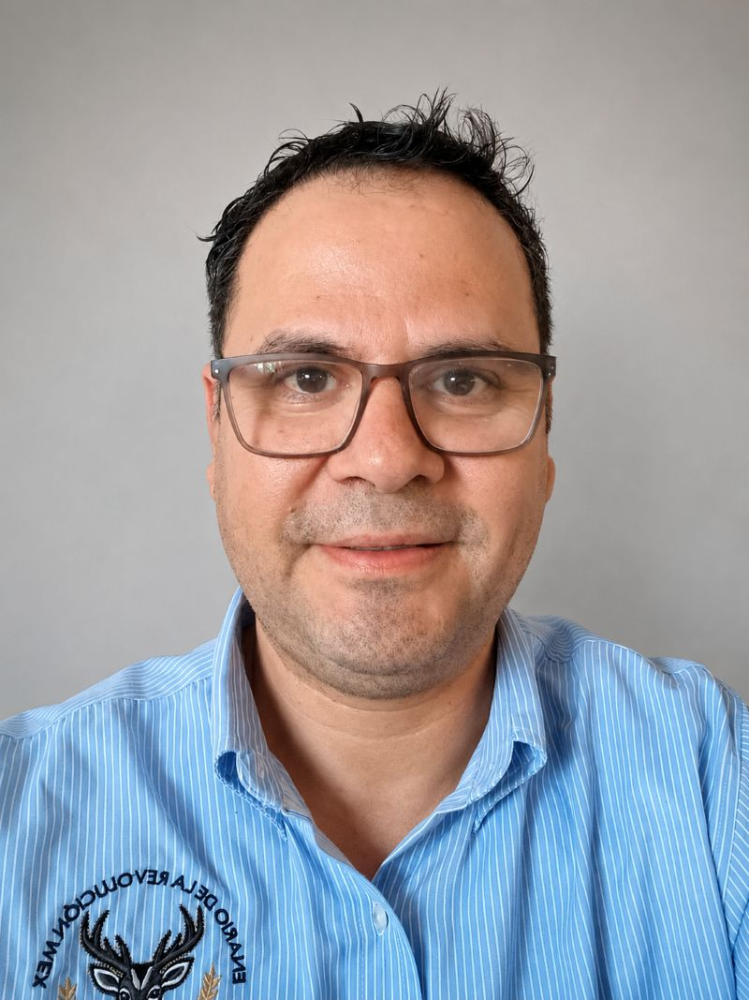

Edgar Zamora | WDD 130

Hello everyone! My name is Edgar Zamora, and I am from Ciudad Victoria, Tamaulipas, Mexico. I work as a secondary school teacher in Reynosa and have more than 20 years of experience teaching English, mathematics, technology, and computer science. I am married and have two children: a son who is serving as a missionary in Brazil and a daughter who is in high school. I served as a missionary in the Oaxaca-Mexico Mission.
I have degrees in Education and Computer Science, and I am now studying Software Development through BYU–Pathway Worldwide to update my skills and learn more about web development. In my free time, I enjoy learning about technology, watching movies, spending time with my family, and serving in The Church of Jesus Christ of Latter-day Saints.